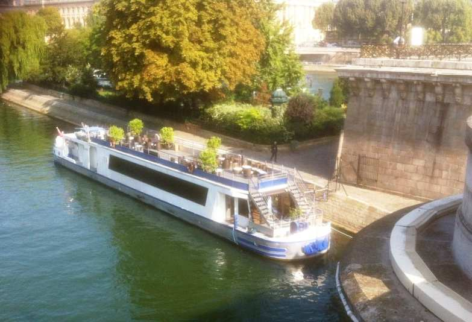

Schedule
| 7:00 PM | Welcoming our guests with an apéritif. |
| 7:30 PM | Boat leaves the pier, dinner will be served during the cruise. |
| 10:30 PM | Back to the pier, the reception will continue with an open bar soft and champaign on the boat. |
| Midnight | End of our reception. |
Sightseeing
Our cruise will go through some of the most remarkable sights of Paris.
25 bridges
14 monuments
4 museums
Notre-Dame de Paris
The Eiffel Tower
The Statue of Liberty *
* The small one
Dinner
Dinner will be served at 7:30 PM
The boat
You will enjoy the charm of seing the French capital from the Seine on the Theo, all dressed from vintage wood and offering an amazing terrace allowing you to enjoy the nice weather in Paris.
